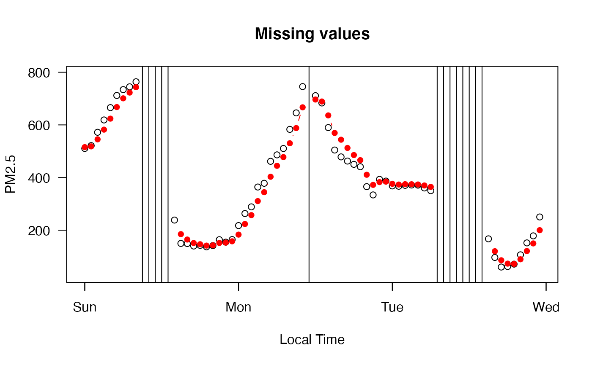

A Nowcast algorithm is applied to the data in in the ws_monitor object. The
version argument specifies the minimum weight factor and number of hours to be
considered in the calculation.
Available versions include:
pm: hours=12, weight=0.5
pmAsian: hours=3, weight=0.1
ozone: hours=8, weight=NA
The default, version='pm', is appropriate for typical usage.
monitor_nowcast(ws_monitor, version = "pm", includeShortTerm = FALSE)
| ws_monitor | ws_monitor object |
|---|---|
| version | character identity specifying the type of nowcast algorithm to be used |
| includeShortTerm | calcluate preliminary NowCast values starting with the 2nd hour |
A ws_monitor object with data that have been processed by the Nowcast algorithm.
This function calculates the current hour's NowCast value based on the value for the given hour and the previous N-1 hours, where N is the number
of hours corresponding to the version argument (see Description above). For example, if version=pm, then the NowCast value
for Hour 12 is based on the data from Hours 1-12.
The function requires valid data for at least two of the three latest hours; NA's are returned for hours where this condition is not met.
By default, the funtion will not return a valid value until the Nth hour. If includeShortTerm=TRUE, the function will return a valid value
after only the 2nd hour (provided, of course, that both hours are valid).
Calculated Nowcast values are truncated to the nearest .1 ug/m3 for 'pm' and nearest .001 ppm for 'ozone' regardless of the precision of the data in the incoming ws_monitor object.
https://en.wikipedia.org/wiki/Nowcast_(Air_Quality_Index)
https://www3.epa.gov/airnow/ani/pm25_aqi_reporting_nowcast_overview.pdf
https://aqicn.org/faq/2015-03-15/air-quality-nowcast-a-beginners-guide/
https://forum.airnowtech.org/t/the-nowcast-for-ozone-and-pm/172
https://forum.airnowtech.org/t/the-aqi-equation/169
https://forum.airnowtech.org/t/how-does-airnow-handle-negative-hourly-concentrations/143
# \donttest{ library(PWFSLSmoke) N_M <- monitor_subset(Northwest_Megafires, tlim=c(20150815,20150831)) Omak <- monitor_subset(N_M, monitorIDs='530470013_01') Omak_nowcast <- monitor_nowcast(Omak, includeShortTerm=TRUE) monitor_timeseriesPlot(Omak, type='l', lwd=2)# Zooming in to check on handling of missing values monitor_timeseriesPlot(Omak, tlim=c(20150823,20150825))monitor_timeseriesPlot(Omak_nowcast, tlim=c(20150823,20150825), pch=16,col='red',type='b', add=TRUE)# }